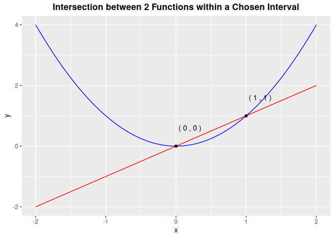

The goal of mathR is to provide convenient functions for basic algebraic operations including root finding, line-line intersection, and modular arithmetic for polynomials. All three functions are applied on polynomials in the real number domain.
Installation
You can install the development version of mathR from GitHub with:
# install.packages("devtools")
devtools::install_github("ADC-405-S26/mathR")Examples
These are basic examples which show you how to solve common algebraic problems:
root_finding example
k is considered a root of f(x) if f(k)=0. Below are two examples of the root_finding function.
# find roots of function f(x) = x^2 + 2x + 1
root_finding(1,2,1)
#> [1] -1
# find roots of function f(x) = x^2 + 0x - 9
root_finding(1,0,-9)
#> [1] 3 -3line_line_intersection example
This example shows the plots of 2 functions, f1(x) = x^2 = 0x^3 + 1x^2 + 0x +0 and f2(x) = x = 0x^3 + 0x^2 + 1x +0 within the interval (-2,2). It also specifies the coordinates of the functions’ intersections inside this window.
line_line_intersection(a1=0,a2=1,a3=0,a4=0,
b1=0,b2=0,b3=1,b4=0,
interval = 2)
modular_arithmetic_for_function example
This example takes the function f(x) = 16x^5 + 5x^4 + 6x^3 + 100x^2 + 17x + 4 modulo m = 4.
f1 <- c(16,5,6,100,17,4)
m<- 4
modular_arithmetic_for_function(f1,m)
#> [1] "0*x^5 + 1*x^4 + 2*x^3 + 0*x^2 + 1*x^1 + 0*x^0"